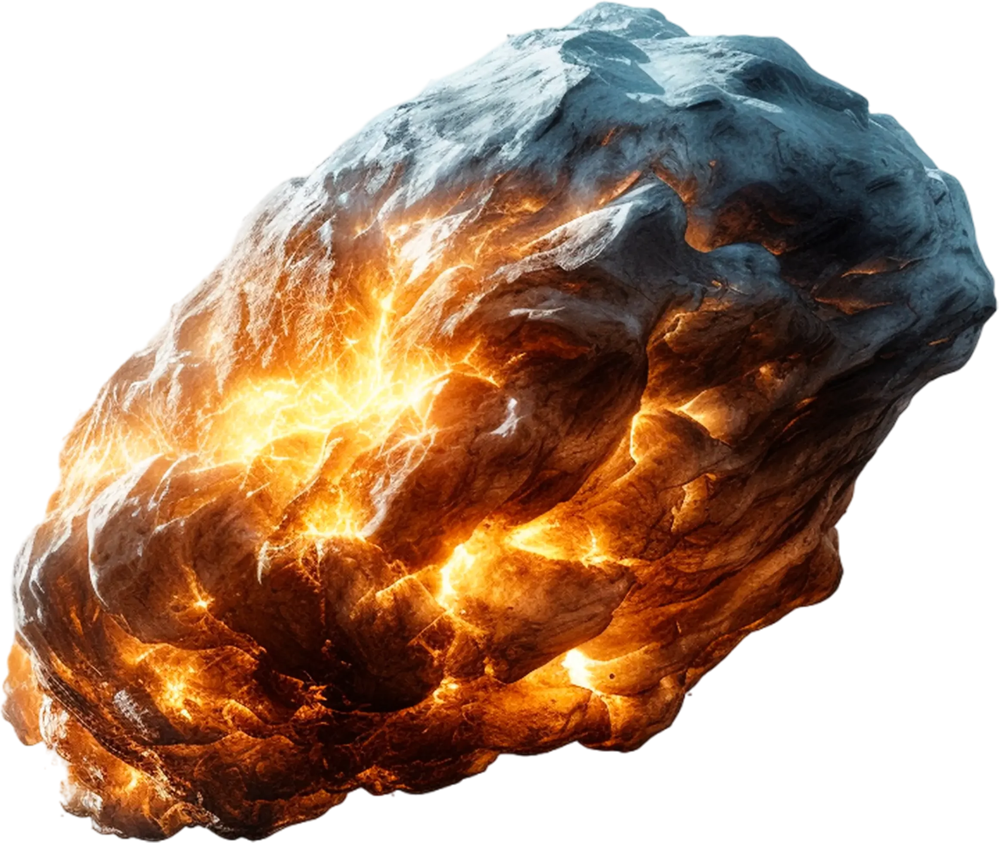

Motion
Studies
Of celestial bodies
Our contribution
Tracking the chaotic trajectories of celestial objects enhances our understanding of solar system dynamics. The main goals are impact hazard assessment, resource exploration, and improving knowledge of solar dynamics, planetary formation, and evolution.